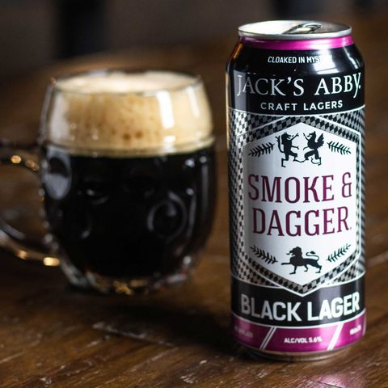

HOME
OUR PICKS
Smoke and Dagger
Jack's Abby Craft Lagers
Cloaked in Mystery, this Black Lager is brewed with traditional old world ingredients and cutting edge lagering techniques. The perfect balance between old and new.
Founded in 2011 by three brothers, Jack, Eric, and Sam Hendler, Jack’s Abby has become a mainstay of the craft brewing scene in the Northeast and nationwide. Located in Framingham, MA.
Check out their site HERE 